To kick off this project, I began with a very basic function that essentially calculates
an average irradiance of one pixel. I used a ns_aa variable and a gridSampler
to find random samples totaling up to ns_aa number of samples. Then, I generate the ray and evaluate its radiance.
The chunk of my time spent debugging Part 1 actually led me back to this first function. Initially, I
rather carelessly wrote code, focusing on understanding the concepts, and ignored C++ semantics of type casting.
That came back to bite me, because two key bugs resulting in broken rendering originated from casting issues.
To actually generate camera rays, I followed CS184's slides on world-space depiction and converting hFov and
vFov, and applying a transform + normalize to obtain a vector representing the direction of our ray.
The next tricky step was figuring out how to create Triangle and Sphere intersections.
I used the Moller Trumbore algorithm's derivation to implement an equivalent in code; I
used this to solve for intersections of a ray into a triangle to obtain a
t-value within a valid range. I then used this t-value
to populate an Intersection data-type. The PathTracer worked, kinda, by this point!
All that was left to do was to implement Sphere type intersections; to tackle this,
I used the quadratic forumla and barycentric coordinate conversions. This procedure was
fairly straightforward, except for realizing that there are possibly two t-values
that arise with intersection with a sphere. The solution to this issue was to consider only the
closer t1 value, which intuitively makes sense to find the initial surface of a sphere.
Below are some examples of normal shading for the few .dae files that render quickly.
The gems, when I took the photo in Part 1, encountered a bug (I think), as they now render properly
after finishing the rest of the parts.
|
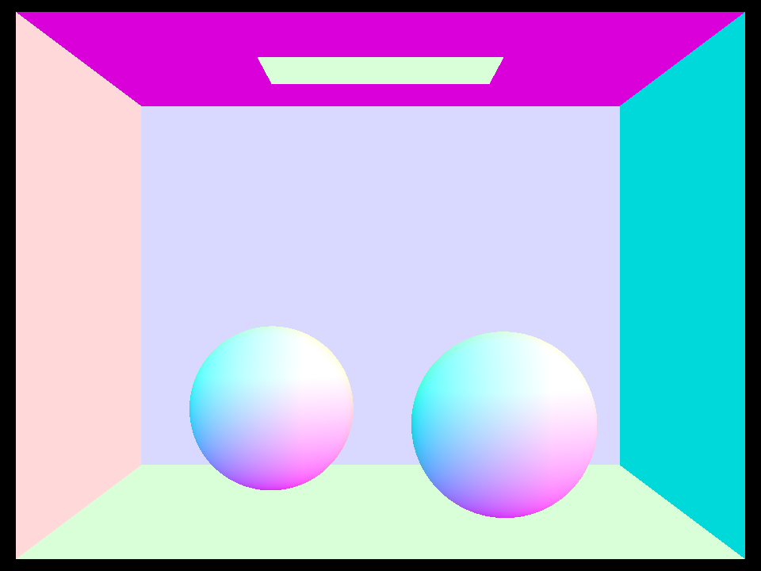
|
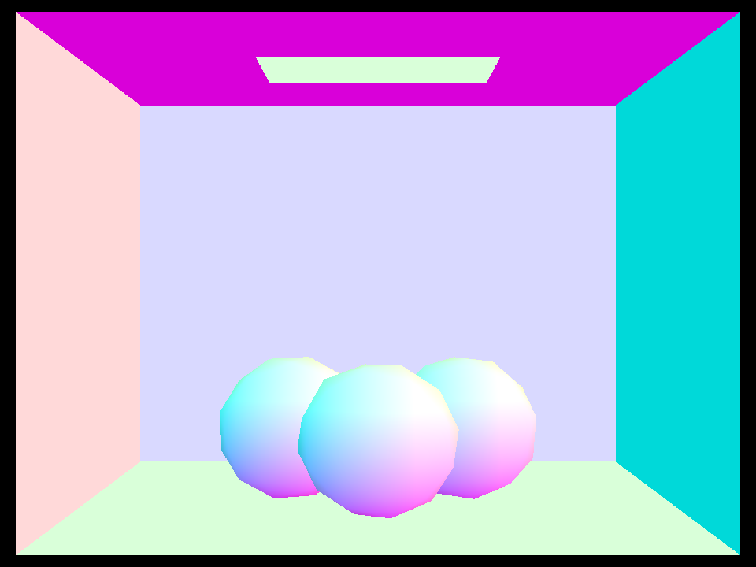
|
|
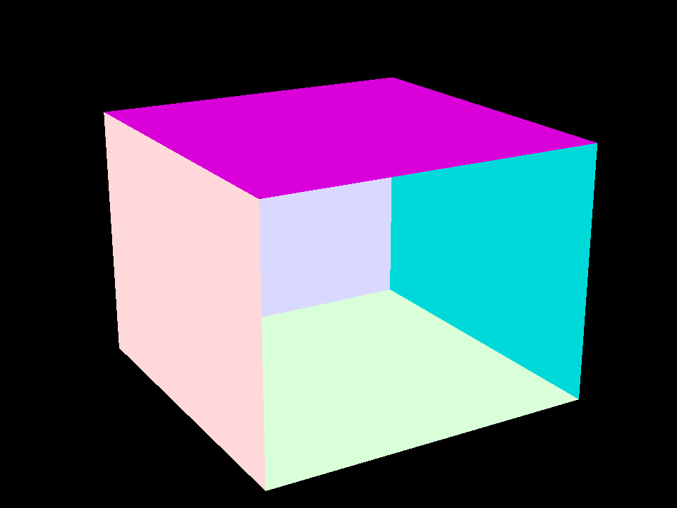
|
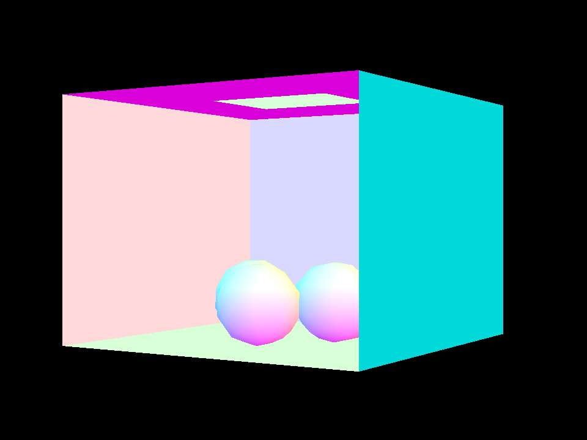
|
To speed up rendering of large .dae files, I implemented a Bounding Volume Hierarchy (BVH) system
to speed up the PathTracer. The BVH system can be broken down into some main components: the construction
of a BVH, the use of bounding boxes, and testing for ray-BVH intersections.
To construct a BVH, I computed a bounding box via primitives and stored it in a BVHNode data structure.
I performed basic tree traversal, handling cases of leaf nodes and the recursive construction of the BVH via subdivisions.
In order to pick an ideal axis, I created a helper function called BVHAccel::findLargestDimension to find the largest dimension
of an extent to obtain an axis from. As the function progressed, I made sure to update the midpoint of the bounding box
by checking if the lesser or greater halves ever became empty. If they did, I simply shifted the midpoint to be either one-half or twice the original
split, respectively.
Checking for BVH intersections was fairly straightforward. I basically checked if either the left or right child of the node encountered a "hit," or intersection
and returned a boolean indicating that. The overloaded BVH algorithm needed a little more tricky handling for the leaf BVH of a node, but it conceptually
was straightforward - perform basic intersection tests, perform subcases for leaf nodes, and recursively call it for the left and right children if it is not.
The more fun part follows. I tried to optimize my BVH as much as possible my ensuring variables weren't repeatedly declared in-memory in for loops.
Furthermore, I shifted around equality checks and tried to short-circuit returns as much as possible to speed up rendering. The results show
that the optimizations work pretty well, check it out for yourself:
Before implementing BVH:
[PathTracer] Rendering... 100%! (156.9915s)
[PathTracer] BVH traced 1905379 rays.
After implementing BVH:
[PathTracer] Rendering... 100%! (0.8008s)
[PathTracer] BVH traced 1515922 rays.
[PathTracer] Averaged 3.923261 intersection tests per ray.
That's a reduction of 156.1907 seconds for the cow render! Although the angle is slightly different so less rays were traced,
we're looking at a 150x - 200x speedup.
Here's some really neat examples of normal shading, including a few .dae files that formerly would not realistically render.
|
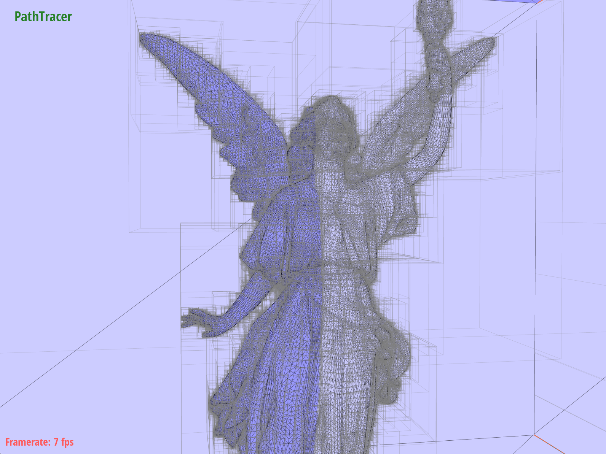
|
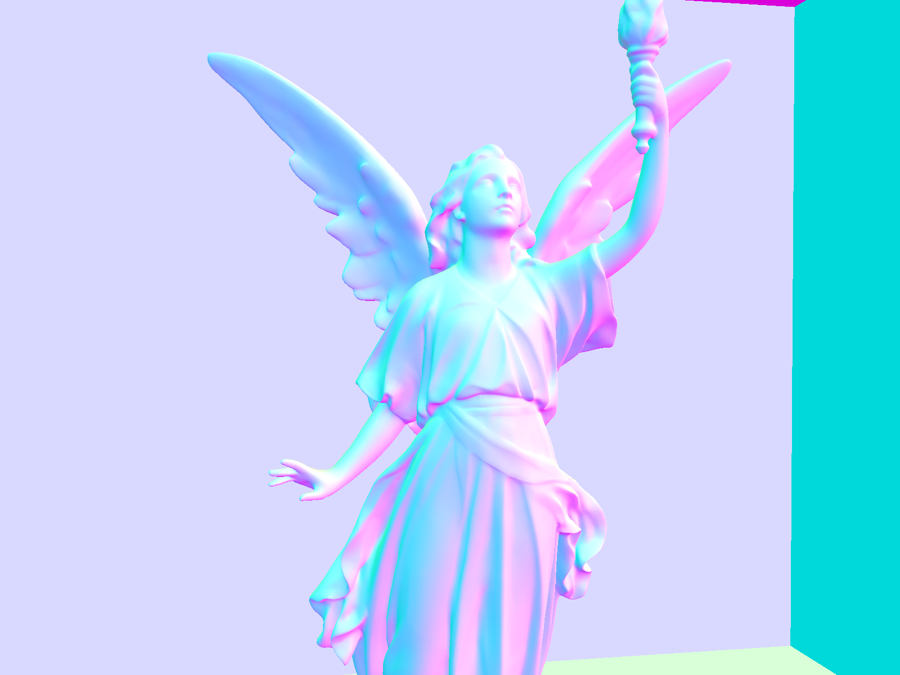
|
|
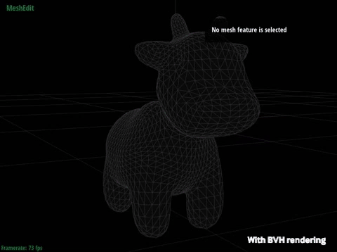
|
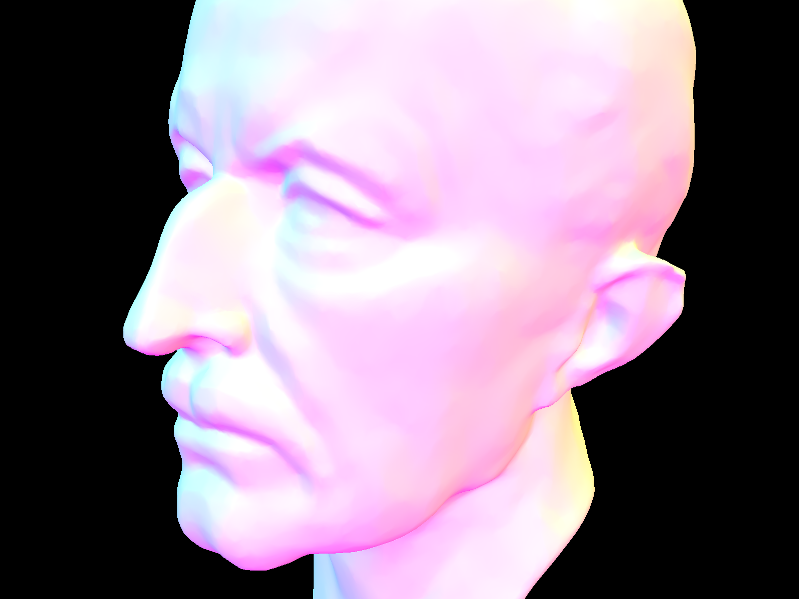
|
To kick off implementing direct lighting, we first had to fill in the two DiffuseBSDF functions for formalities sake. Although the
f function is a constant, sample_f uses the built in sampler for wi. With
that completed, we can move on to the bulk of implementing direct illumination.
For direct hemisphere lighting, I wrote a function that takes uniform samples surrounding hit_p and computed the
incoming radiance from every ray intersecting a light source. This was pretty straightforwarded, following the steps to gather
the samples, cast a ray from our hit_p out, testing our BVH, and performing the math as shown in the slides.
For direct lighting with importance sampling, we sum over every light source in the scene and
take samples from the incoming radiance from every light's surface. This solves the noise issue from the previous part, although
it is more computationally intensive. To implement this, I instead looped over every SceneLight and followed the
steps somewhat straightforwardly. To my surprise, I was able to re-use most of the computations from the previous part. However,
I had to handle the sampling cases and disToLight concepts here.
In the examples below, I compare my results between hemisphere and importance sampling methods. To summarize the difference,
I found that hemisphere sampling was computationally faster by a non-trivial amount. However, we can see very strong differences
to the naked eye between uniform hemisphere sampling and lighting sampling. Sorry for the accidental crop with the dragons, but
we can still see clearly how show shadows with very few light samples introduces quite a lot of noise. To reduce this noise, we
increase the amount of light rays, while locking it at 1 sample per pixel to observe the effects. We can see a somewhat linear correlation
to reduction of noise as more light rays are introduced. Clearly, importance lighting sampling is still preferred, as we will realistically take
more than 1 sample per pixel and have >64 light rays, which will produce a beautiful result.
|
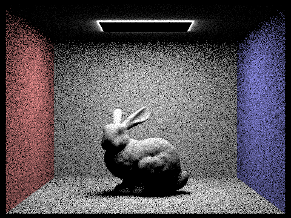
|
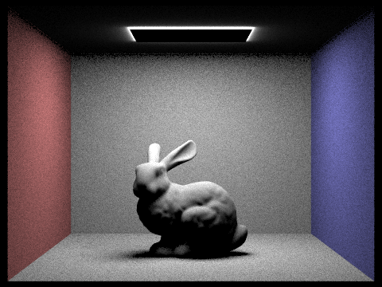
|
|
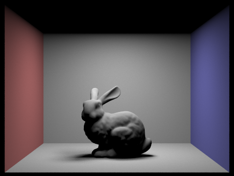
|
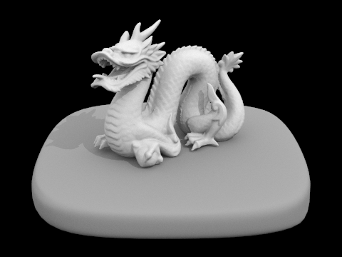
|
|
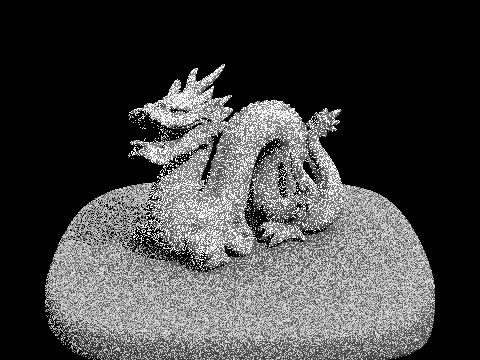
(279,002 rays traced, 0.1006s) |
(469,232 rays traced, 0.2259s) |
|
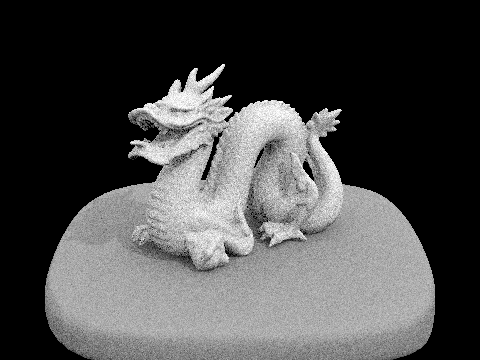
(1,167,802 rays traced, 0.6013s) |
(3,983,177 rays traced, 1.9312s) |
For the next part of the project, we want to be able to render images with full global illumination. This requires probabilistic light bouncing
calculations, which we will refer to as indirect lighting. To accomplish this, we will focus heavily on a function called,est_radiance_global_illumination, gives us an estimate of the total radiance using global illumination, from a specific direction, which
is broken down into some more subparts, as follows:
zero_bounce_radiance simply returns light resulting from zero bounces, e.g., the point must actively be on a light.one_bounce_radiance just returns direct illumination as in part 3.at_least_one_bounce_radiance is the substance of this indirect lighting section, which we will now dive into.p = 0.6
to determine if I wanted to terminate the ray. Then, I ensured that indirect illumination and sufficient depth for recursion was enabled so that I
always traced at least once bounce. Then, I performed standard offset calculations and recursively traced the ray, converted incoming radiance into
an estimation, and then returned that. Lastly, I fixed the global_illumnation function to selectively toggle which function to call. All of my bug-checking
came from forgetting to do this step... so let's go look at some pretty pictures again now.
max_ray_depth equal to 0, 1, 2, 3, and 100. Then, I compared various sample-per-pixel rates, using 1, 2, 4, 8, 16, 64, and 1024, with
a static 4 light rays. The wall of photos is as follows:
|
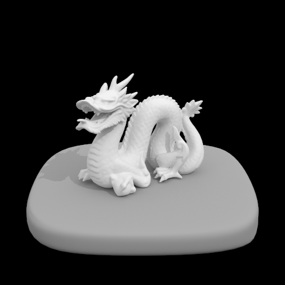
|
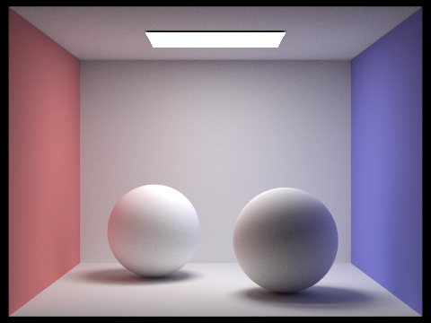
| |
|
|
| |
|
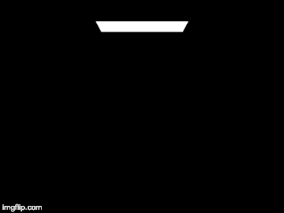
|
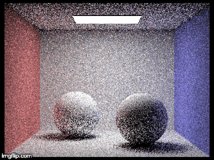
| |
|
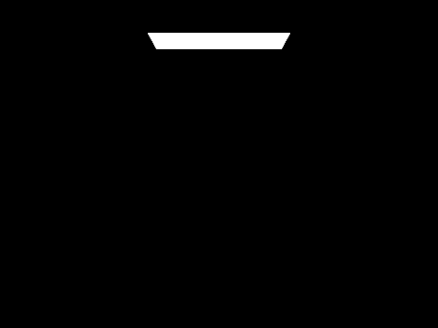
|
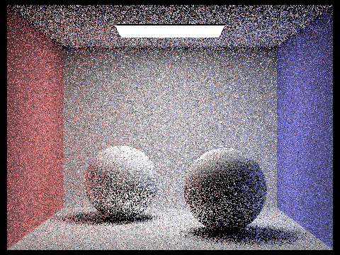
|
|
|
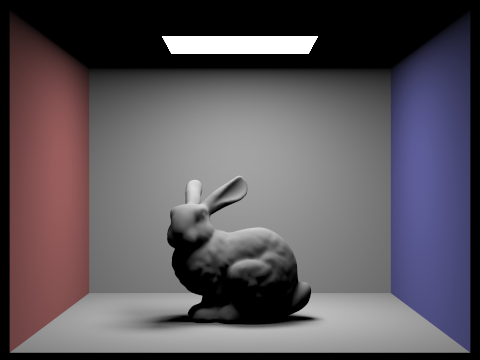
|
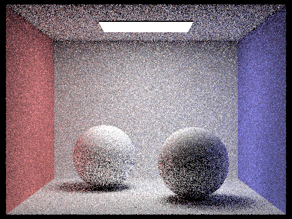
|
|
|
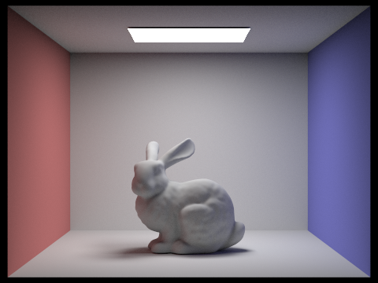
|
|
|
|
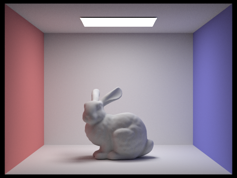
|
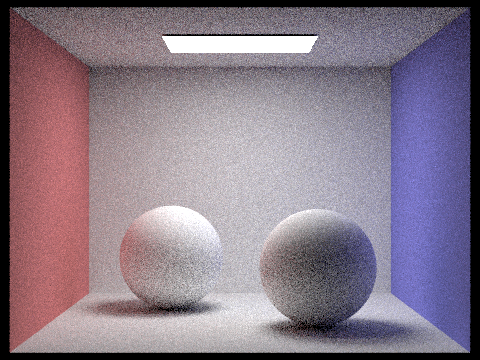
|
|
|
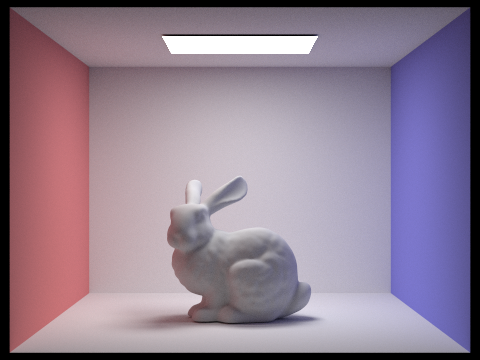
|
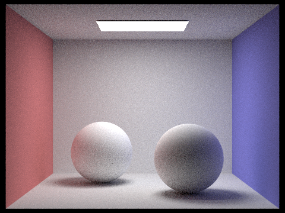
|
|
|
|
|
In the last part of the project, I implemented adaptive sampling. To do this,
I followed the spec's very simple algorithm that pixel-by-pixel detects if the
pixel has converged during ray tracing. We use a simple algorithm and check
to represent the 95% confidence interval from statistics and add it to our
modified part 1 for loop that now traces and detects convergence. I tweaked a few
variables involving sampleBuffer and added the statistical computations,
changed my offset code, and properly updated the average variables I had from part 1.
The result is some beautiful rendering that takes way less time to produce an image
with minimal noise, as shown below!
We can see that the blue sections are areas of no sampling rate, e.g., the sky light source
and the blank xyz space surrounding it. The areas of green indicate a mid-range of the
sampling rate, and the interesting areas of red indicate a higher sampling rate. These
areas of high sampling rate feature heavy definitions of shadows resulting from both
direct and indirect lighting, i.e., global illumination. Thus, we see that rendering
global illumination around heavily shadowed areas such as the bunny is very resource
intensive and results in a high sample rate.
|
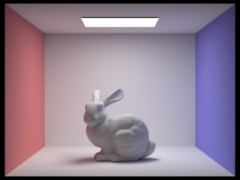
|
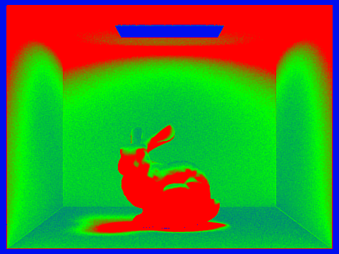
|